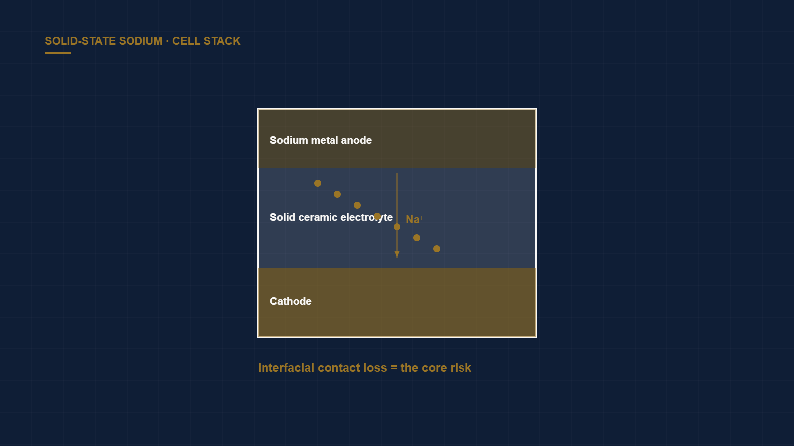

Deal Memo: Solid-State Sodium for Behind-the-Meter Storage
← Back to Intelligence Hub
Sodium-ion is having a genuine commercial moment — CATL, HiNa, and Northvolt among others have pushed cells toward production — and solid-state sodium is the natural next question for behind-the-meter residential and commercial storage. The pitch nearly writes itself: sodium is effectively unlimited, geopolitically neutral, and cheap, and a solid electrolyte promises to remove the fire risk that makes lithium-ion awkward inside buildings.
Why the pitch is easy
- Abundant, cheap inputs. Sodium is orders of magnitude more abundant than lithium, with no cobalt or nickel exposure. On the supply-chain and scalability filter, the input story clears cleanly — this is the category's real structural advantage.
- Intrinsic safety. A solid electrolyte removes the flammable liquid organic electrolyte, which is exactly what a fire marshal cares about for a battery mounted in a garage or a basement. For behind-the-meter, safety is not a nice-to-have; it is a permitting gate.
- Low-temperature tolerance. Sodium chemistries often hold capacity better in the cold than lithium iron phosphate, an advantage for unconditioned residential installs.
Why the diligence is hard
The uncomfortable questions are all about durability at the solid-solid interface, not chemistry on paper:
- Interfacial resistance and contact loss. The central unsolved problem of nearly all solid-state batteries is maintaining intimate solid-solid contact through the volume changes of charge and discharge. As contact degrades, internal resistance climbs, quietly eroding round-trip efficiency and usable power. This is a mechanics problem as much as a chemistry one.
- Cycle life under thermal swing. Solid-electrolyte interfaces are sensitive to thermal cycling, and residential units see wide daily temperature swings. The question is whether the cell survives a decade of that — not a decade at a controlled lab 25 °C.
- Dendrites through the solid. A persistent surprise in solid-state research is that metal can still propagate through grain boundaries and voids in a ceramic electrolyte, causing shorts. Sodium is no exception.
- Real duty cycles. Behind-the-meter units cycle irregularly — partial discharges, long idles, occasional deep cycles. Lab cycling at constant depth-of-discharge tells you almost nothing about field degradation.
Manufacturing reality
Even a durable cell has to be made cheaply. Solid-state sodium borrows little from the mature lithium-ion production base; densifying ceramic electrolytes and building good interfaces at scale is unproven manufacturing. The learning curve and yield ramp are a material part of the risk, and a team that waves at "gigafactory economics" without a process demonstration is skipping the hardest chapter.
Verdict
The materials and safety story is genuinely de-risked; the reliability and manufacturability story is not. Fund teams that lead with multi-year field-cycling data under realistic thermal and load profiles and a credible process-scale plan — and discount anyone still quoting only lab cycle counts at constant conditions.